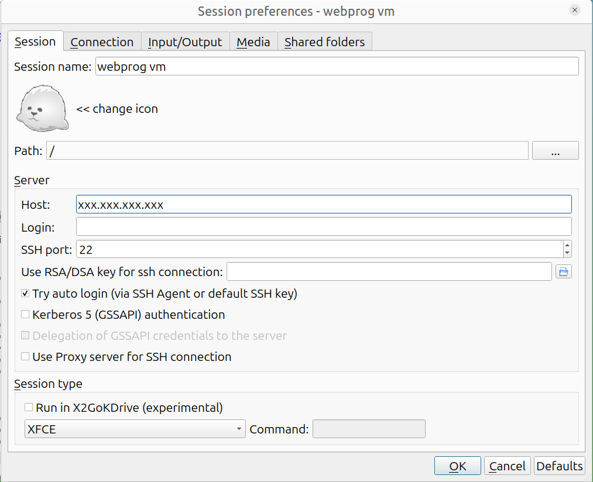

Each student is being given a virtual machine which is dedicated to this course. You may use it for any activities relevant to this course or your CS interests.
Note that you will have exclusive access to this VM via its IP address
which will typically start with 128.226. All programming work for
this course must be done on your VM. Do not attempt to use
remote.cs; it will not work as the software installed there is
out-of-date.
The VM can only be accessed using ssh from within the campus network accessed using the campus VPN.
The VM runs Ubuntu 24.04. Software which will be required by the course is pre-installed, but it is possible that you may need to install additional software during the course of the semester.
You should make sure that you perform each of the following steps:
Set up necessary git repositories on your VM; this is detailed in a separate document.
[This document uses the term "workstation " to refer to the computer to which your keyboard and mouse are attached to.]
You should have received an email giving you the IP
address VM-IP of your VM, your login id VM-LOGIN-ID and your initial
password VM-PW. Since your password has been exposed in an unsecure
email, it must be changed ASAP. Hence you should immediately
login to your VM and change your password to some VM-NEW-PW of your
choosing.
Ensure that your workstation is connected to the campus network, possibly using the campus VPN.
Use ssh to connect to your VM using the provided IP address
VM-IP, VM-LOGIN-ID and initial password VM-PW.
If your workstation runs Linux or OS/X, you can do so using a
command-line ssh client. If your workstation runs Windows, you
can use
Windows Terminal from the MS store. There is even an
ssh app which you can install for your Chrome browser; this
should work for all OS's which support Chrome.
[It may be the case that your VM has a name starting with a course number different from the course you are registered for; it was set up this way for the convenience of the sysadmin and should not make any difference to you.]
Use the passwd command on your VM, to change your password
to VM-NEW-PW.
Once you have logged in to the campus VPN as in (1) above, the following log shows how you would perform steps (2) and (3):
# from a linux or os/x terminal (windows will differ). $ ssh VM-LOGIN-ID@VM-IP The authenticity of host 'VM-IP (VM-IP)' can't be established. ECDSA key fingerprint is ... Are you sure you want to continue connecting (yes/no)? yes Warning: Permanently added 'VM-IP' (ECDSA) to the list of known hosts. VM-LOGIN-ID@VM-IP's password: VM-PW #will not be echoed Welcome to Ubuntu 22.04 ... ... # at this point you should be connected to your VM. VM-LOGIN-ID@COURSE-VM-LOGIN-ID:~$ passwd #passwords not echoed below Changing password for VM-LOGIN-ID. (current) UNIX password: VM-PW Enter new UNIX password: VM-NEW-PW Retype new UNIX password: VM-NEW-PW
If your workstation does not already have a public/private ssh keys set up, generate one using the method appropriate for your workstation's OS and then copy over the public key to your VM.
On a unix-based OS like linux or OS/X this can be done using ssh-keygen to generate the public/private keypair and then using ssh-copy-id to copy your public key to your workstation.
Verify that you can ssh from your workstation to your VM without needing to type your password.
If you only use ssh, you obtain only basic command-line access to
your VM. But you will need GUI access to your VM as the course
progresses and are required to verify that you have set up GUI access
in your submission for Project 1. The most convenient access is
provided by x2go. (The end of this document lists some alternatives
in case you just cannot get x2go to work.)
Install a
X2Go client for
the workstation you are using to access your VM if one is not
already installed (note that a x2goclient command is available
on remote.cs).
Start the x2goclient.
Create a session for connecting to your VM by clicking Session -> New session. Fill in the following fields:
webprog vm
Your VM's IP address VM-IP
Your login id VM-LOGIN-ID on your VM (if different from your
login id on your workstation).
Select Try auto login (via SSH Agent or default SSH key) (this assumes that you have correctly set up password-less login from your workstation to your VM).
LXDE or XFCE.
You should now be able to use the above session to access your VM using a GUI. You should not require a password if you have set up the ssh keys correctly.
The following is a screenshot of my x2go configuration for accessing
my VM from within the campus network (or VPN):

With the above setup, I do not need to type in a password when connecting to my VM.
When disconnecting from x2go, use the Suspend control (the widget which looks like a pause control, with two lines) on the blue x2go window. This will ensure that you can pick up where you left off when you reconnect to your VM. Do not shutdown your VM (you will need to restart it manually using the VSphere Web Client if you do so).
To set the shell used by npm to bash, use the following command:
$ npm config set script-shell /usr/bin/bash
This will update your ~/.npmrc and npm will use bash to run scripts in
the future.
In case you accidentally shutdown your VM or simply find it unreachable, you can use your VM's web console to restart it.
Use all except the last step in the instructions for the vSphere Web Client to get access to your VM.
Use the Actions->Power menu item to restart your VM.
If you cannot connect via x2go to your VM, please try the following:
Verify that your workstation's internet connection is working by accessing some web site not related to the university.
Connect your workstation to the campus VPN.
Use ssh to connect to remote.cs. If you are unable to do so, go
to the CS SysAdmin
page for assistance.
From remote.cs, ssh to your VM using its IP address. If this
succeeds, then there is a problem with x2go. If this fails, then
your VM is down; restart it using the
vsphere web client.
If the problem appears to be x2go, try shutting down your x2goserver using the power button on your x2goclient or by restarting your VM as per the previous step.
Some students using OS/X workstations have found that:
Rebooting your mac may help.
More drastic: Reinstalling x2go and xquartz solves x2go problems.
One workaround for OS/X. If you have xquartz installed, but x2go
is not installed or not working, you can display GUI applications
running on remote.cs on your mac by using the -Y option when
connecting to remote.cs using your OS/X terminal.
If all else fails, please send me an email giving your VM's IP and describe your workstation's environment. Please detail the responses to each of the above steps.
Your vm account has administrative privileges. You can run any
administrative CLI command by preceeding that command by sudo at
which point you will be prompted for your current password.
If you run an administrative task using the GUI, you will again be
prompted for your current VM password.
You will find that the VM has two additional accounts in addition to your account. You should not touch those accounts. If something goes wrong with your VM, we may be able to use these accounts to login to your VM and attempt to fix the problem.
You can install additional system-wide software packages using the
command line using apt or using a
GUI-program found on the system menu. In particular, sudo apt
install PACKAGE can be used to install a PACKAGE from the Ubuntu
package repository.
The VM has text editors/IDEs like Visual Studio code, emacs,
gedit, nano, sublime and vim already installed. However, you
may want to use the above package manager to install a text editor or
IDE of your choice.
It is a good idea to keep the software on your VM up-to-date. Every few weeks, you should update it:
$ sudo apt update $ sudo apt upgrade
Check whether you need to reboot:
$ cat /var/run/reboot-required
If this file exists, the above command will tell you whether a reboot is required. To reboot, first backup all work, shutdown all applications running within your VM and then simply reboot:
$ sudo shutdown -r now
Your GUI session will lock up. You will need to escape out of it; you should be able to get back in within a couple of minutes. If something goes wrong please use the vsphere console to debug.
If, for some reason, you just cannot get x2go to connect to your VM, you can try using one of these other methods of obtaining GUI access to your VM.
VNC allows remote access to graphical desktops. It is not as efficient as x2go which is optimized for X11, but has the advantage that it can be used to access non-X11 desktops like a Windows desktop.
Connect to your VM using ssh.
Use an editor on your VM to create a script
~/.vnc/xstartup to start lxde. Make it executable using chmod
a+x ~/.vnc/xstartup.
Start up a VNC server on your VM.
Run vncpasswd to set up a password VNC-PW for your VNC
sessions.
Run vncserver to start up the VNC server. Note the VNC
port VNC-PORT on which the server starts (usually 1).
Install a VNC viewer for the workstation you are using to access your VM if one is not already installed.
Run the VNC viewer to connect to VM-IP:VNC-PORT. Provide your
VNC password VNC-PW when prompted. You should see your desktop.
You can kill your vnc server using vncserver -kill :VNC-PORT. If
you would like to set a size for its window, specify the -geometry
argument. See the man page
for more information.
Instead of running a full remote session, you can run a X11 server on your Windows workstation. xming appears to be a popular X11 server running under Window. Apparently, xlaunch is a wizard for starting xming sessions. Since I do not use Windows, I have not tried this and YMMV.
Go to this URL: <http://csvb-vc.binghamton.edu>. (this must be done from within the campus network).
Click through the security warnings and click the LAUNCH VSPHERE CLIENT button.
Login with your regular BU username and password.
Enter BU\ before your username. Do not check the
Use Windows session authentication checkbox.
On the left-hand side of the interface you can expand the tree. Keep expanding the levels until you see a VM whose name is based on your user ID. You should see a summary of your VM.
Use the provided link to open a web console to the VM which will allow you to interact with it as if you were sitting in front of it using a console which runs within your web browser.
Note that unlike the x2go or vnc options, the vSphere web client will not persist your session on your VM.